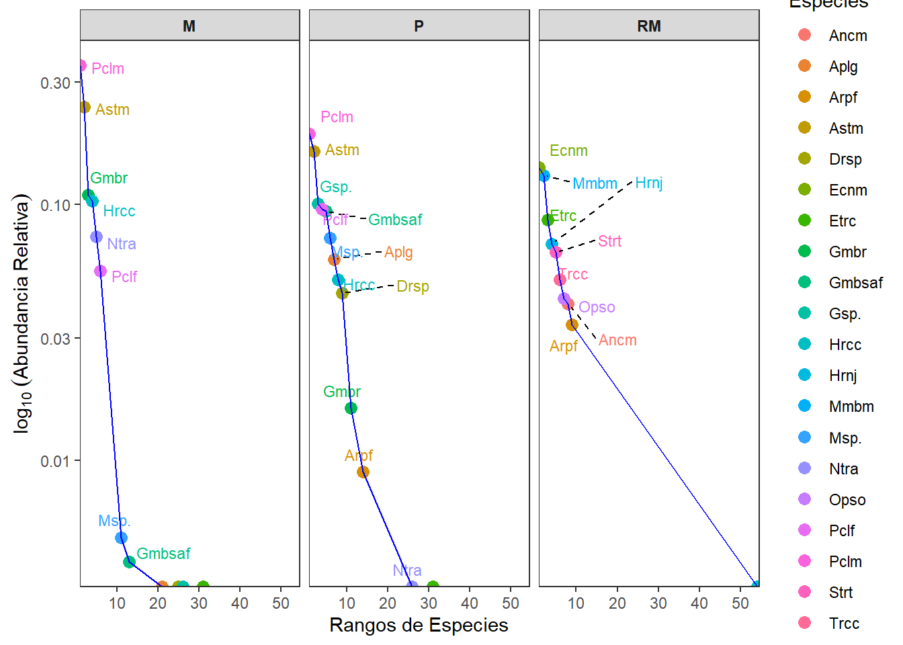
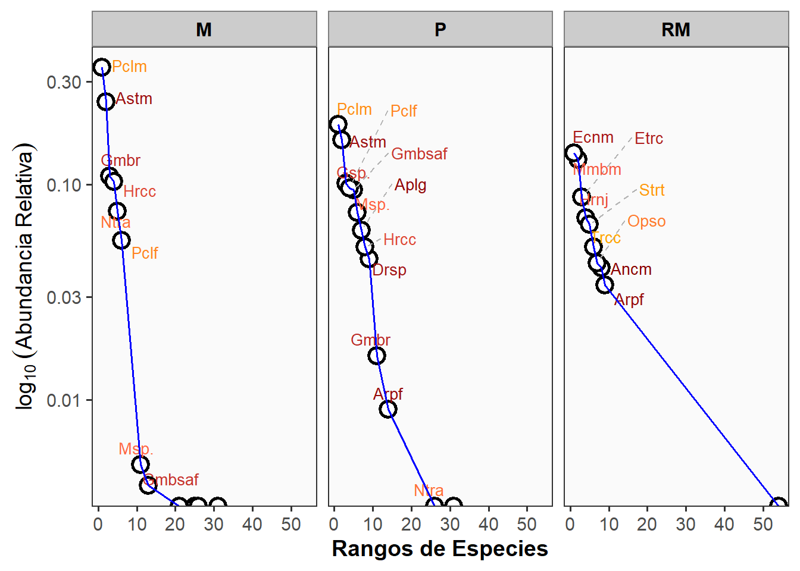
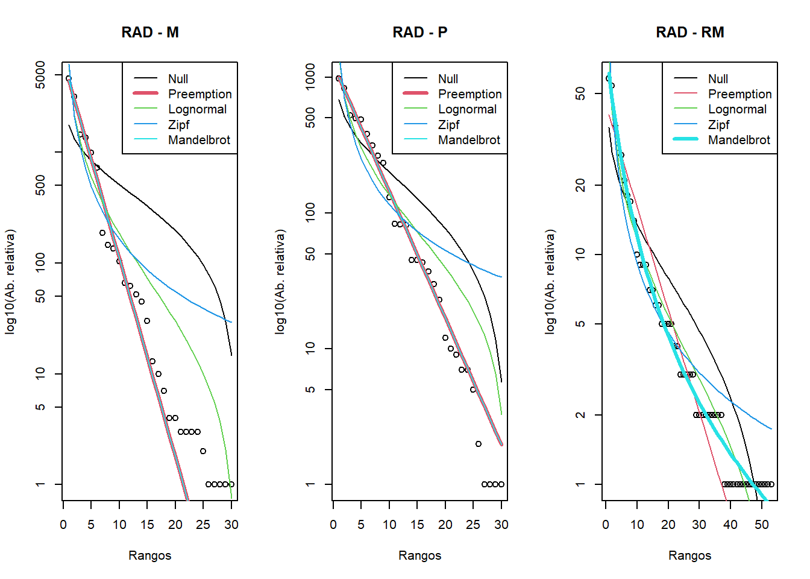
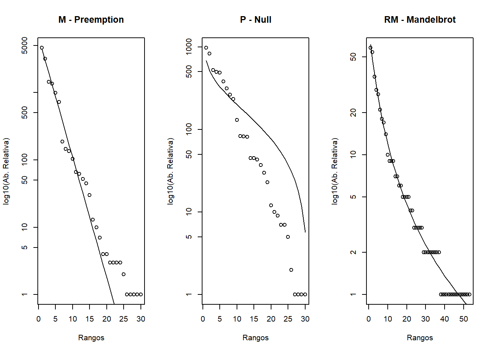
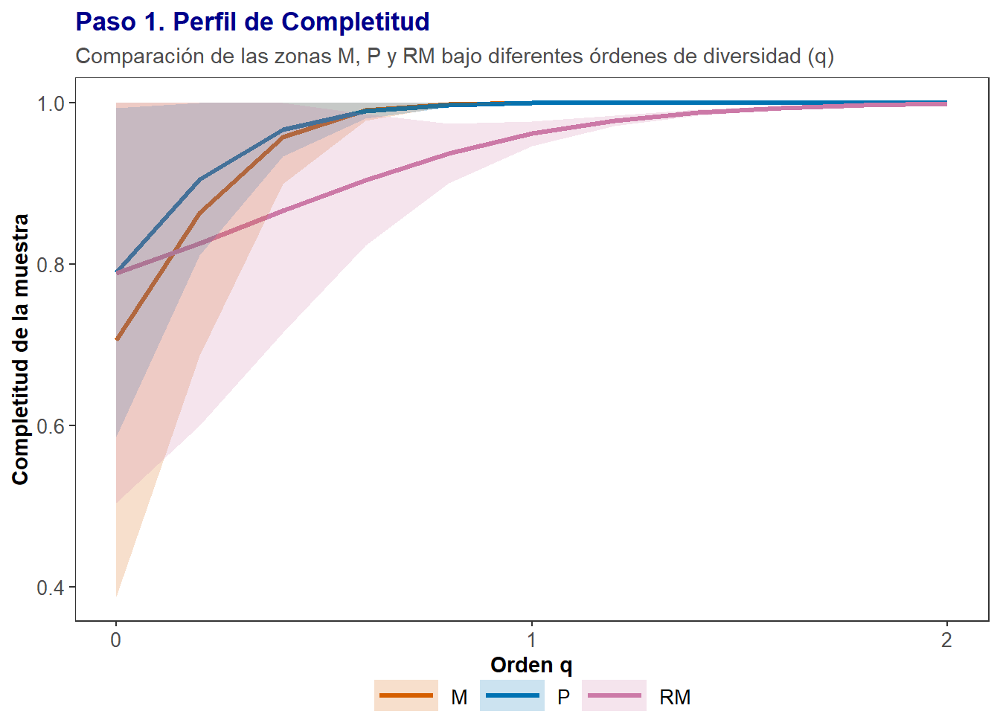
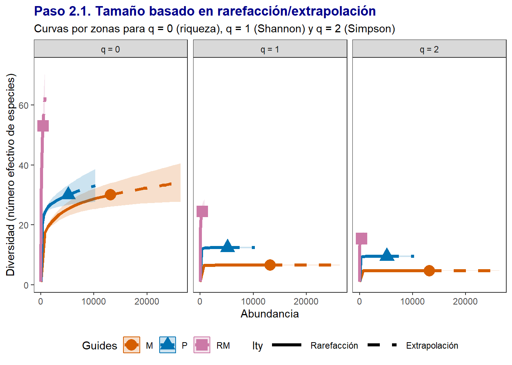
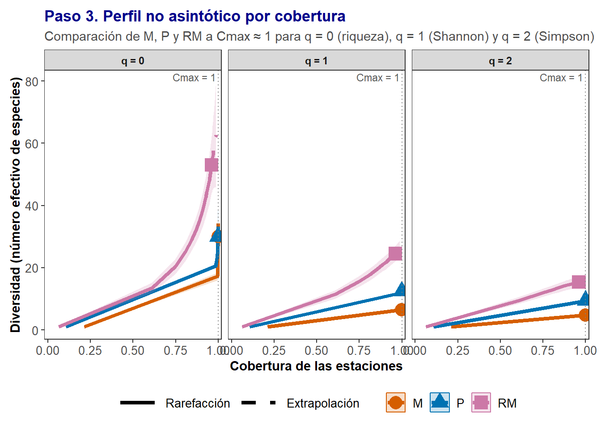
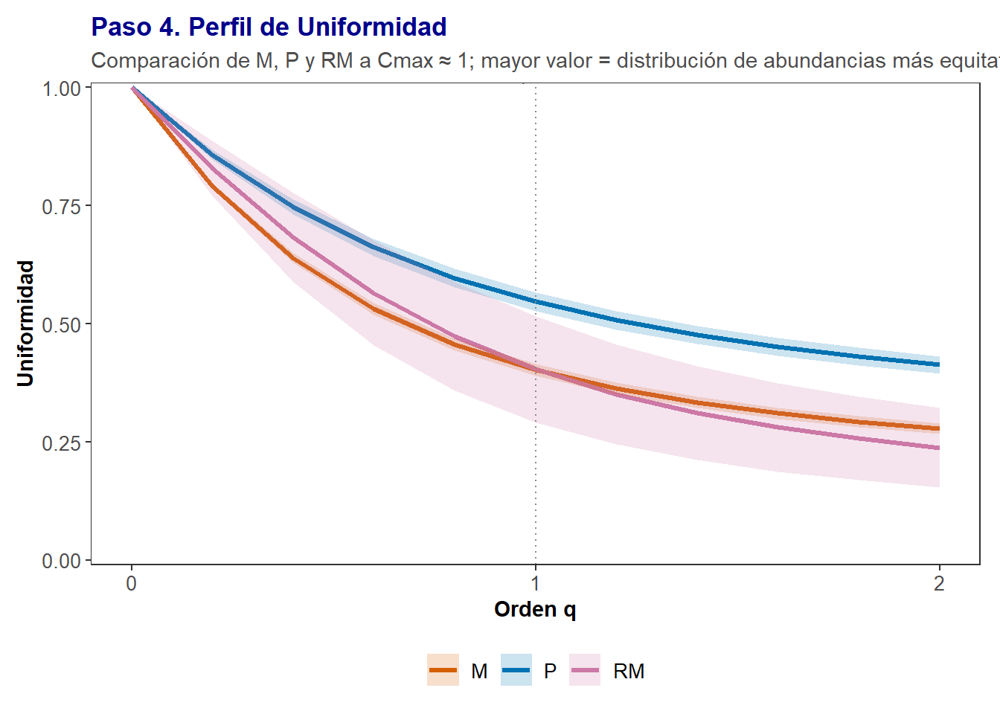

Introducción
Según Whittaker (1972), la diversidad de las comunidades ecológicas puede descomponerse en tres componentes jerárquicos: alfa, beta y gamma.
La diversidad alfa representa el número de especies observadas dentro de una comunidad o hábitat relativamente homogéneo, y constituye la escala local de la diversidad.
La diversidad beta expresa el grado de recambio o reemplazo de especies entre comunidades a lo largo de gradientes espaciales o ambientales, mientras que la diversidad gamma corresponde a la diversidad regional total, resultante de la integración de la diversidad alfa y beta dentro de un paisaje o ecosistema.
En el caso de la diversidad alfa, se reconocen tres dimensiones interrelacionadas:
(1) la riqueza de especies (S o q=0),
(2) la equidad (q=1, q=2), y
(3) la diversidad propiamente dicha, entendida como la combinación de ambas propiedades.
La riqueza corresponde al número total de especies registradas en la comunidad o muestra evaluada.
La equidad, expresada mediante los órdenes de diversidad q=1 (Shannon) y q=2 (Simpson), describe cómo se distribuyen las abundancias relativas entre las especies, reflejando el grado de dominancia o balance en la comunidad. Por tanto, los índices de Shannon–Weaver y de Simpson son ampliamente utilizados para evaluar la uniformidad en la contribución de las especies al total de individuos, representando una medida más robusta y menos sesgada que la mera riqueza para estimar la diversidad efectiva.
Para este capítulo se adopta la propuesta metodológica de Chao et al. (2020), que integra la estimación de la diversidad en cuatro pasos: (1) la completitud de la muestra, (2) la diversidad asintótica (observada vs. estimada), (3) la diversidad no asintótica (interpolada y extrapolada), y (4) la uniformidad en la distribución de abundancias. Este procedimiento, basado en los números efectivos de Hill (q = 0, 1, 2), permite estandarizar comparaciones entre comunidades con diferentes tamaños o esfuerzos de muestreo.
Los estimadores de riqueza (q=0), aunque conceptualmente simples, dependen del esfuerzo de muestreo y tienden a subestimar la diversidad real. Por ello, se emplean métodos de rarefacción y extrapolación que ajustan la riqueza observada a un tamaño muestral o cobertura comparable entre comunidades (Colwell & Coddington, 1994; Gotelli & Colwell, 2001).
Por otra parte, los estimadores de equidad y diversidad (q=1 y q=2) pueden abordarse mediante modelos paramétricos y no paramétricos.
Los modelos paramétricos, como las distribuciones logarítmica, log-normal o de Zipf–Mandelbrot, relacionan la riqueza de especies con sus abundancias relativas y son representados visualmente mediante los diagramas de rango-abundancia de Whittaker (1965). Estos modelos se ajustan en R con el comando radfit del paquete vegan (Oksanen et al., 2025), que evalúa distintos patrones de dominancia-diversidad (e.g. Broken stick, Preemption, Log-normal, Zipf, Mandelbrot) utilizando criterios de información como AIC y BIC.
Los modelos no paramétricos, en cambio, no asumen una forma teórica de la distribución y se basan en el número de especies raras (singletons, doubletons) para estimar las especies no detectadas y la completitud del muestreo. En este trabajo se implementan mediante la librería iNEXT (Chao et al., 2015; Hsieh et al., 2024), que desarrolla el enfoque de diversidad basado en cobertura y los cuatro pasos analíticos propuestos por Chao y colaboradores.
En conjunto, el análisis de diversidad alfa, tanto paramétrico como no paramétrico, ofrece una perspectiva integral para comprender los patrones de abundancia y equidad de las comunidades biológicas, permitiendo inferir los mecanismos ecológicos que estructuran la diversidad local.
Objetivos
Analizar la diversidad alfa de comunidades biológicas a partir de métodos paramétricos y no paramétricos, aplicando los modelos de distribución rango–abundancia (RAD) y los números efectivos de Hill (q = 0, q = 1, q = 2).
Comparar la riqueza, equidad y uniformidad de las comunidades en distintas zonas o hábitats, utilizando herramientas estadísticas y gráficas en R —principalmente los paquetes vegan e iNEXT.4steps.
Comprender los patrones de dominancia y balance de abundancias, evaluar la completitud del muestreo, y establecer inferencias ecológicas sobre los mecanismos que estructuran la diversidad local a lo largo de gradientes ambientales o espaciales.
Competencias a desarrollar
1. Competencias conceptuales
Comprender los fundamentos teóricos de la diversidad alfa, y su relación con los componentes beta y gamma según Whittaker (1972).
Diferenciar los enfoques paramétricos (curvas RAD, modelos log-normal, Zipf, Mandelbrot) y no paramétricos (números de Hill, iNEXT) en la evaluación de la diversidad ecológica.
Interpretar el significado ecológico de los órdenes de diversidad q = 0, q = 1 y q = 2, como medidas de riqueza, equidad y dominancia.
Reconocer la importancia de la completitud muestral y la rarefacción como estrategias para comparar comunidades bajo condiciones estandarizadas de esfuerzo de muestreo.
2. Competencias procedimentales
Aplicar en R los métodos de análisis de diversidad alfa usando los paquetes vegan e iNEXT.4steps.
Ajustar e interpretar curvas rango–abundancia (RAD) mediante el comando
radfit, identificando patrones de dominancia y estructura comunitaria.Calcular los números efectivos de Hill (q = 0, 1, 2) y los cuatro pasos de diversidad de Chao et al. (2020): completitud, diversidad asintótica, no asintótica y uniformidad.
Visualizar e interpretar los perfiles de diversidad y curvas de rarefacción/extrapolación como herramientas para evaluar el grado de representatividad de las muestras.
Comparar la diversidad entre comunidades y discutir sus implicaciones ecológicas a partir de los resultados obtenidos.
3. Competencias actitudinales
Desarrollar una actitud crítica frente al uso de los índices de diversidad, reconociendo sus limitaciones y supuestos estadísticos.
Promover la interpretación ecológica integral de los resultados, considerando factores ambientales, espaciales y metodológicos.
Fomentar el uso de herramientas reproducibles en R para la evaluación cuantitativa de la biodiversidad, fortaleciendo la transparencia y rigor científico.
Valorar la diversidad biológica como un componente esencial para el manejo sostenible y la conservación de ecosistemas.
A. Ejercicio de visualización de diversidad alfa de peces en ríos de México
Resumen
En el presente ejercicio, se empleará una base de datos derivada del estudio de Ruiz-Campos et al. (2021) (enlace_artículo), donde se analiza la diversidad y distribución longitudinal de ensamblajes de peces en la cuenca del río Soto La Marina, al noreste de México. A través del análisis de datos ambientales y biológicos recolectados en 43 sitios, los autores identifican tres ensamblajes principales asociados a zonas fisiográficas (montaña, planicie y desembocadura), y exploran cómo variables como salinidad, conductividad, turbidez y estructura del hábitat explican la composición de esta ictiofauna a lo largo del gradiente ambiental.

Objetivos del ejercicio
Analizar y visualizar la diversidad alfa de ensamblajes de peces a lo largo del gradiente longitudinal del río Soto La Marina (noreste de México), con base en la información de Ruiz-Campos et al. (2021).
Comparar la estructura y composición de las comunidades ícticas entre tres zonas fisiográficas —montaña (M), planicie (P) y desembocadura (RM)— empleando métodos paramétricos y no paramétricos de evaluación de diversidad.
Comprender los gradientes ecológicos que estructuran la ictiofauna a lo largo del sistema fluvial, relacionando los resultados con factores ambientales como la salinidad, la conductividad y la conectividad hidrológica.
Cargar paquetes y lectura de bases de datos
Base de datos de las especies
La base de datos con las 90 especies de peces se llamará biol (Tabla 1).
| Sites | Sites1 | Hypanus sabinus | Elops saurus | Megalops atlanticus | Albula vulpes | Anguilla rostrata | Myrophis punctatus | Anchoa mitchilli | Anchoa hepsetus | Brevoortia gunteri | Brevoortia patronus | Dorosoma cepedianum | Dorosoma petenense | Harengula jaguana | Opisthonema oglinum | Campostoma anomalum | Cyprinella lutrensis | Dionda episcopa | Dionda sp. | Notropis aguirrepequenoi | Moxostoma congestum | Astyanax mexicanus | Ariopsis felis | Ameiurus melas | Ameiurus natalis | Ictalurus lupus | Ictalurus punctatus | Ictalurus sp. | Pylodictis olivaris | Synodus foetens | Porichthys plectrodon | Dajaus monticola | Mugil curema | Membras martinica | Menidia beryllina | Hemiramphus brasiliensis | Strongylura timucu | Fundulus grandis | Lucania parva | Gambusia affinis | Gambusia aurata | Gambusia regani | Gambusia sp. | Poecilia formosa | Poecilia latipinna | Poecilia mexicana | Poecilia sp. | Xiphophorus variatus | Prionotus rubio | Centropomus undecimalis | Mycteroperca bonaci | Serranus atrobranchus | Lepomis macrochirus | Micropterus spp. | Caranx crysos | Caranx hippos | Caranx latus | Oligoplites saurus | Trachinotus carolinus | Trachinotus falcatus | Lutjanus campechanus | Lutjanus cyanopterus | Lutjanus griseus | Diapterus auratus | Diapterus rhombeus | Eucinostomus melanopterus | Gerres cinereus | Anisotremus surinamensis | Archosargus probatocephalus | Lagodon rhomboides | Aplodinotus grunniens | Bairdiella chrysoura | Bairdiella ronchus | Cynoscion arenarius | Cynoscion nebulosus | Leiostomus xanthurus | Micropogonias undulatus | Pogonias cromis | Herichthys labridens | Herichthys cyanoguttatus | Oreochromis aureus | Dormitator maculatus | Gobiomorus dormitor | Gobionellus oceanicus | Scomberomorus regalis | Etropus crossotus | Achirus lineatus | Symphurus civitatum |
|---|---|---|---|---|---|---|---|---|---|---|---|---|---|---|---|---|---|---|---|---|---|---|---|---|---|---|---|---|---|---|---|---|---|---|---|---|---|---|---|---|---|---|---|---|---|---|---|---|---|---|---|---|---|---|---|---|---|---|---|---|---|---|---|---|---|---|---|---|---|---|---|---|---|---|---|---|---|---|---|---|---|---|---|---|---|---|---|---|
| 11M | M | 0 | 0 | 0 | 0 | 0 | 0 | 0 | 0 | 0 | 0 | 0 | 0 | 0 | 0 | 0 | 0 | 0 | 0 | 79 | 4 | 27 | 0 | 0 | 0 | 0 | 0 | 0 | 0 | 0 | 0 | 0 | 0 | 0 | 0 | 0 | 0 | 0 | 0 | 0 | 0 | 0 | 0 | 0 | 0 | 32 | 0 | 0 | 0 | 0 | 0 | 0 | 0 | 9 | 0 | 0 | 0 | 0 | 0 | 0 | 0 | 0 | 0 | 0 | 0 | 0 | 0 | 0 | 0 | 0 | 0 | 0 | 0 | 0 | 0 | 0 | 0 | 0 | 0 | 30 | 0 | 0 | 0 | 0 | 0 | 0 | 0 | 0 |
| 12M | M | 0 | 0 | 0 | 0 | 0 | 0 | 0 | 0 | 0 | 0 | 0 | 0 | 0 | 0 | 0 | 0 | 0 | 0 | 38 | 31 | 6 | 0 | 0 | 0 | 0 | 0 | 3 | 0 | 0 | 0 | 0 | 0 | 0 | 0 | 0 | 0 | 0 | 0 | 0 | 0 | 0 | 0 | 0 | 0 | 0 | 0 | 0 | 0 | 0 | 0 | 0 | 0 | 0 | 0 | 0 | 0 | 0 | 0 | 0 | 0 | 0 | 0 | 0 | 0 | 0 | 0 | 0 | 0 | 0 | 0 | 0 | 0 | 0 | 0 | 0 | 0 | 0 | 0 | 0 | 0 | 0 | 0 | 0 | 0 | 0 | 0 | 0 |
| 13M | M | 0 | 0 | 0 | 0 | 0 | 0 | 0 | 0 | 0 | 0 | 0 | 0 | 0 | 0 | 0 | 0 | 0 | 0 | 15 | 5 | 6 | 0 | 0 | 0 | 0 | 2 | 0 | 0 | 0 | 0 | 0 | 0 | 0 | 0 | 0 | 0 | 0 | 0 | 0 | 0 | 0 | 0 | 2 | 0 | 32 | 0 | 0 | 0 | 0 | 0 | 0 | 3 | 1 | 0 | 0 | 0 | 0 | 0 | 0 | 0 | 0 | 0 | 0 | 0 | 0 | 0 | 0 | 0 | 0 | 0 | 0 | 0 | 0 | 0 | 0 | 0 | 0 | 0 | 22 | 0 | 0 | 0 | 0 | 0 | 0 | 0 | 0 |
| 14M | M | 0 | 0 | 0 | 0 | 0 | 0 | 0 | 0 | 0 | 0 | 0 | 0 | 0 | 0 | 0 | 0 | 0 | 0 | 3 | 0 | 71 | 0 | 0 | 0 | 0 | 0 | 0 | 0 | 0 | 0 | 0 | 0 | 0 | 0 | 0 | 0 | 0 | 0 | 0 | 0 | 0 | 0 | 6 | 0 | 106 | 0 | 0 | 0 | 0 | 0 | 0 | 0 | 14 | 0 | 0 | 0 | 0 | 0 | 0 | 0 | 0 | 0 | 0 | 0 | 0 | 0 | 0 | 0 | 0 | 0 | 0 | 0 | 0 | 0 | 0 | 0 | 0 | 0 | 13 | 0 | 0 | 0 | 0 | 0 | 0 | 0 | 0 |
| 17M | M | 0 | 0 | 0 | 0 | 0 | 0 | 0 | 0 | 0 | 0 | 0 | 0 | 0 | 0 | 0 | 0 | 4 | 0 | 0 | 0 | 32 | 0 | 0 | 0 | 0 | 0 | 0 | 0 | 0 | 0 | 0 | 0 | 0 | 0 | 0 | 0 | 15 | 0 | 0 | 0 | 0 | 0 | 5 | 0 | 21 | 0 | 0 | 0 | 0 | 0 | 0 | 0 | 14 | 0 | 0 | 0 | 0 | 0 | 0 | 0 | 0 | 0 | 0 | 0 | 0 | 0 | 0 | 0 | 0 | 0 | 0 | 0 | 0 | 0 | 0 | 0 | 0 | 0 | 4 | 0 | 0 | 0 | 0 | 0 | 0 | 0 | 0 |
| 18M | M | 0 | 0 | 0 | 0 | 0 | 0 | 0 | 0 | 0 | 0 | 1 | 0 | 0 | 0 | 0 | 0 | 0 | 9 | 0 | 45 | 2 | 0 | 0 | 0 | 0 | 0 | 2 | 0 | 0 | 0 | 0 | 0 | 0 | 0 | 0 | 0 | 1 | 0 | 0 | 0 | 0 | 0 | 25 | 0 | 0 | 0 | 0 | 0 | 0 | 0 | 0 | 0 | 3 | 0 | 0 | 0 | 0 | 0 | 0 | 0 | 0 | 0 | 0 | 0 | 0 | 0 | 0 | 0 | 0 | 0 | 0 | 0 | 0 | 0 | 0 | 0 | 0 | 0 | 9 | 0 | 0 | 0 | 0 | 0 | 0 | 0 | 0 |
Tabla con nombres completos y abreviados en formato largo
A continuacion se genera una tabla que corresponden a un procedimiento para incluir un identificador de cada especie que presenta su nombre completo y abreviado.
| ID | Especies | Abrev |
|---|---|---|
| 1 | Hypanus sabinus | Hypa |
| 2 | Elops saurus | Elop |
| 3 | Megalops atlanticus | Mega |
| 4 | Albula vulpes | Albu |
| 5 | Anguilla rostrata | Angu |
| 6 | Myrophis punctatus | Myro |
Incluir la columna de abundancias totales
A continuacion se complementa la tabla que incluye a la abundancia total, filtrada de mayor a menor densidad de individuos.
| ID | Especies | Abrev | Abundancia |
|---|---|---|---|
| 1 | Poecilia mexicana | Pclm | 5573 |
| 2 | Astyanax mexicanus | Astm | 4003 |
| 3 | Herichthys cyanoguttatus | Hrcc | 1616 |
| 4 | Gambusia regani | Gmbr | 1519 |
| 5 | Poecilia formosa | Pclf | 1222 |
| 6 | Notropis aguirrepequenoi | Ntra | 996 |
| 7 | Gambusia affinis | Gmbsaf | 538 |
| 8 | Gambusia sp. | Gsp. | 522 |
| 9 | Micropterus spp. | Msp. | 448 |
| 10 | Aplodinotus grunniens | Aplg | 316 |
1 Estimadores clásicos de diversidad alfa por cada zona altitudinal
La Tabla 2 Muestra los valores totales de abundancias de especies de peces en las tres zonas altitudinales evaluadas M: Montaña “Mountain”, P: laderas “Plain”, RM: desembocadura “Mouth”).
| Sites1 | Hyps | Elps | Mgla | Albv | Angr | Myrp | Ancm | Anch | Brvg | Brvp | Drsc | Drsp | Hrnj | Opso | Cmpa | Cypl | Dnde | Dsp. | Ntra | Mxsc | Astm | Arpf | Amrm | Amrn | Ictl | Ictp | Isp. | Pylo | Synf | Prcp | Djsm | Mglc | Mmbm | Mndb | Hmrb | Strt | Fndg | Lcnp | Gmbsaf | Gmbsar | Gmbr | Gsp. | Pclf | Pcll | Pclm | Psp. | Xphv | Prnr | Cntu | Mycb | Srra | Lpmm | Msp. | Crnc | Crnh | Crnl | Olgs | Trcc | Trcf | Ltjnscm | Ltjnscy | Ltjg | Dpta | Dptr | Ecnm | Grrc | Anss | Arcp | Lgdr | Aplg | Brdc | Brdr | Cyna | Cynn | Lstx | Mcru | Pgnc | Hrcl | Hrcc | Orca | Drmm | Gbmd | Gbno | Scmr | Etrc | Achl | Symc |
|---|---|---|---|---|---|---|---|---|---|---|---|---|---|---|---|---|---|---|---|---|---|---|---|---|---|---|---|---|---|---|---|---|---|---|---|---|---|---|---|---|---|---|---|---|---|---|---|---|---|---|---|---|---|---|---|---|---|---|---|---|---|---|---|---|---|---|---|---|---|---|---|---|---|---|---|---|---|---|---|---|---|---|---|---|---|---|---|
| M | 0 | 0 | 0 | 0 | 0 | 0 | 0 | 0 | 0 | 0 | 1 | 2 | 0 | 0 | 1 | 0 | 4 | 104 | 994 | 186 | 3176 | 0 | 1 | 3 | 4 | 3 | 30 | 0 | 0 | 0 | 0 | 0 | 0 | 0 | 0 | 0 | 45 | 1 | 52 | 135 | 1436 | 1 | 725 | 7 | 4600 | 3 | 145 | 0 | 0 | 0 | 0 | 13 | 66 | 0 | 0 | 0 | 0 | 0 | 0 | 0 | 0 | 0 | 0 | 0 | 0 | 0 | 0 | 0 | 0 | 3 | 0 | 0 | 0 | 0 | 0 | 0 | 0 | 10 | 1353 | 62 | 0 | 0 | 0 | 0 | 0 | 0 | 0 |
| P | 0 | 0 | 0 | 0 | 0 | 0 | 0 | 0 | 0 | 0 | 82 | 234 | 0 | 0 | 30 | 1 | 0 | 0 | 2 | 1 | 827 | 45 | 0 | 0 | 5 | 0 | 10 | 1 | 0 | 0 | 9 | 0 | 0 | 1 | 0 | 0 | 43 | 0 | 486 | 0 | 83 | 521 | 497 | 37 | 973 | 7 | 0 | 0 | 12 | 0 | 0 | 81 | 382 | 0 | 0 | 0 | 0 | 0 | 0 | 0 | 0 | 0 | 0 | 0 | 0 | 0 | 0 | 0 | 0 | 313 | 0 | 0 | 0 | 0 | 0 | 0 | 0 | 23 | 263 | 130 | 7 | 45 | 0 | 0 | 0 | 0 | 0 |
| RM | 10 | 6 | 1 | 1 | 1 | 1 | 17 | 6 | 9 | 9 | 0 | 0 | 29 | 18 | 0 | 0 | 0 | 0 | 0 | 0 | 0 | 14 | 0 | 0 | 0 | 0 | 0 | 0 | 2 | 7 | 1 | 9 | 54 | 0 | 1 | 27 | 0 | 0 | 0 | 0 | 0 | 0 | 0 | 0 | 0 | 0 | 0 | 1 | 1 | 1 | 1 | 0 | 0 | 3 | 5 | 4 | 7 | 21 | 2 | 1 | 2 | 3 | 1 | 2 | 58 | 5 | 1 | 3 | 5 | 0 | 3 | 2 | 4 | 1 | 2 | 5 | 2 | 0 | 0 | 0 | 0 | 1 | 1 | 3 | 36 | 2 | 2 |
Con los datos de la Tabla 2, a continuación se calculan algunos índices de diversidad general, en la propuesta de Borcard et al. (2018). q_0, q_1 y q_2 corresponden a los valores de diversidad en términos de riqueza o número de especies, especies abundantes de acuerdo a euler elevado a la Shannon y las especies muy abundantes según el inverso del índice de Simpson, respectivamente. De igual forma se evalúa la unidormidad en la abundancia de las diferentes especies para cada zona, con el índice de Pielou.
En la Tabla 2 se observa que en la desembocadura - RM presenta la mayor riqueza de especies (q₀ = 53), así como los mayores valores de diversidad ponderada por abundancias (q₁ = 24.5 y q₂ = 15.4), demostrando ser el lugar más diverso y con menor dominancia o mayor equidad. La zona de laderas - P, se presentan 31 especies, con una diversidad intermedia y una equidad elevada (J’ = 0.74), lo que sugiere una distribución relativamente homogénea de las abundancias. En contraste, la zona montañoza - M, aunque posee la misma riqueza que P (31 especies), presenta una diversidad efectiva menor (q₁ = 6.6; q₂ = 4.7) y una equidad más baja (J’ = 0.55), posiblemente porque pocas especies son las ominantes en esos lugares. En conjunto, el gradiente de diversidad y equidad (RM > P > M) refleja un posible incremento en la estabilidad ecológica y en la heterogeneidad de hábitats hacia de las zonas elevadas hacia las de desembocadura.
| Sites1 | q_0 | q_1 | q_2 | Equidad_J |
|---|---|---|---|---|
| M | 30 | 6.5 | 4.7 | 0.55 |
| P | 30 | 12.4 | 9.5 | 0.74 |
| RM | 53 | 24.5 | 15.4 | 0.81 |
2 Diversidad alfa con curvas de distribución rango-abundancia RAD
Las curvas rango–abundancia (RAD, Rank–Abundance Distributions), también conocidas como diagramas de Whittaker, constituyen una de las representaciones gráficas más clásicas para describir la estructura de las comunidades biológicas (Whittaker, 1965). En estas curvas, las especies se ordenan en el eje x según su rango de abundancia (de la más a la menos abundante) y en el eje y se representa su abundancia relativa —frecuentemente en escala logarítmica—. La pendiente y forma de la curva permiten inferir sobre el grado de dominancia, equidad y riqueza dentro del ensamblaje: curvas más empinadas reflejan comunidades dominadas por pocas especies, mientras que curvas más suaves y extendidas indican una distribución más equitativa de las abundancias.
En el presente análisis, se construye la tabla biol_rad, que organiza las abundancias en rangos de acuerdo con su magnitud, y servirá como base para la representación de las curvas RAD correspondientes a cada zona evaluada. Estas curvas permiten visualizar de manera comparativa los patrones de diversidad alfa y la estructura interna de los ensamblajes en función de las diferencias ambientales o espaciales. Aplicaciones prácticas de estas curvas, pueden encontrarse en Crane et al. (2018).
| Sites1 | Especies | Abundancia | Rango | Ab_rel |
|---|---|---|---|---|
| M | Ancm | 0 | 31 | 0.000 |
| M | Drsp | 2 | 25 | 0.000 |
| M | Hrnj | 0 | 31 | 0.000 |
| M | Opso | 0 | 31 | 0.000 |
| M | Ntra | 994 | 5 | 0.075 |
| M | Astm | 3176 | 2 | 0.241 |
La Figura 1 muestra que en las montañas (M) se observa una curva pronunciada, con pocas especies dominantes (como Pclm y Astm) y una rápida caída de las abundancias, lo que indica alta dominancia y baja equidad. En las laderas o planicies (P) la pendiente es más suave, con una mayor proporción de especies intermedias y una distribución más equilibrada de abundancias, reflejando una diversidad y uniformidad moderadas. En la desembocadura (RM) la curva es la más extendida y menos inclinada, lo que evidencia una alta riqueza y equidad, sin especies extremadamente dominantes. Este patrón confirma el gradiente de diversidad observado en los índices de Hill (Tabla 2): el ensamblaje se vuelve más diverso y equitativo desde las montañas hacia la desembocadura, posiblemente debido al aumento en la disponibilidad de hábitats y recursos a lo largo del gradiente altitudinal.

La Figura 2 muestra opción de graficar la figura anterior :

a. Ajuste de las curvas RAD
Los modelos de distribución rango–abundancia (RAD, Rank–Abundance Distribution) describen cómo se reparte la abundancia entre las especies de una comunidad o ensamblaje y permiten comparar patrones de diversidad entre muestras sometidas a distintas condiciones ambientales (ej. gradientes de altura o de profundidad) o grados de perturbación. Estos modelos, ajustados mediante el comando radfit del paquete vegan, utilizan criterios de información (AIC y BIC) para determinar cuál describe mejor los datos observados. Son especialmente útiles cuando se trabaja con datos discretos de abundancia (conteos o frecuencias) y pueden interpretarse dentro del marco de los Modelos Lineales Generalizados (GLMs), considerando supuestos como la independencia de las observaciones y la homogeneidad de varianzas. En caso de sobredispersión, pueden explorarse distribuciones alternativas, como la Binomial Negativa.
Estos modelos de distribución ajustados representan una de las expresiones matemáticas más claras del clásico dilema en ecología de comunidades: la relación entre dominancia y diversidad (Martin et al., 2023). Según Oksanen et al. (2025), el paquete vegan de R proporciona herramientas específicas —como la función radfit— que permiten ajustar distintos modelos de distribución rango-abundancia (Preemption, Log-normal, Zipf y Mandelbrot), y seleccionar el mejor mediante criterios de información (AIC y BIC).
Chao et al. (2015) ampliaron estos enfoques incorporando métodos avanzados para validar el ajuste de las curvas RAD y su comportamiento a lo largo de gradientes ambientales, relacionando la abundancia relativa observada en una muestra con la abundancia relativa real en el ensamblaje, incluyendo la estimación de especies no detectadas. Por su parte, Foster y Dunstan (2010) exploraron variantes distribucionales como la binomial negativa truncada y el modelo multinomial de Dirichlet, que permiten una representación más flexible de las comunidades ecológicas con alta varianza o agregación. Finalmente, Matthews y Whittaker (2015) destacaron la utilidad de estos modelos —también conocidos como Species Abundance Distributions (SAD)— como herramientas visuales intuitivas para evaluar cambios en la estructura comunitaria a lo largo de gradientes ambientales o en respuesta a perturbaciones ecológicas.
El comando radfit compara cinco modelos teóricos: nulo (Null), geométrico o de preempción (Preemption), log-normal, Zipf y Mandelbrot.
El modelo nulo representa a comunidades sin una estructura definida, asociadas a fases iniciales de sucesión y/o a perturbaciones intensas.
El modelo de preemptión indica dominancia de pocas especies oportunistas que compiten por recursos limitados, típico de comunidades empobrecidas o estresadas ambientalmente.
El modelo log-normal caracteriza ecosistemas tropicales diversos y relativamente estables, donde la mayoría de las especies presentan abundancias intermedias.
El modelo Zipf describe comunidades jerárquicas dominadas por una o pocas especies con ventajas competitivas notorias.
El modelo Mandelbrot, una variante del Zipf, refleja una estructura más compleja y estable, donde coexisten especies dominantes y raras, representando una mayor integridad ecológica.
En este sentido, los modelos Preemption y Zipf suelen asociarse a ambientes perturbados o de baja integridad ecológica, mientras que los modelos Log-normal y Mandelbrot describen comunidades más equilibradas y diversas. El modelo nulo, por su parte, denota ensamblajes sin un patrón ecológico definido.
| Especies | M | P | RM |
|---|---|---|---|
| Achl | 0 | 0 | 2 |
| Albv | 0 | 0 | 1 |
| Amrm | 1 | 0 | 0 |
| Amrn | 3 | 0 | 0 |
| Anch | 0 | 0 | 6 |
| Ancm | 0 | 0 | 17 |
Warning: glm.fit: algorithm did not converge
Warning: glm.fit: algorithm did not converge
Warning: glm.fit: algorithm did not converge
Warning: glm.fit: algorithm did not convergeZona M - mod.mountains (Preemption, AIC = 754.9).
El modelo de preemptión indica alta dominancia: unas pocas especies ocupan gran parte del recurso y el resto cae rápido en abundancia. Es consistente con la baja equidad (J’ ≈ 0.55) y con curvas RAD muy empinadas; ecológicamente sugiere estrés o perturbación que favorece a especies oportunistas y reduce la diversidad efectiva.
Zona P - mod.plain (Preemption, AIC = 276.6).
También predomina un patrón de dominancia secuencial, pero menos extremo que en M. Coicide con los índices (J’ ≈ 0.74): aunque existen pocas especies dominantes, entre las restantes la distribución es relativamente homogénea, por eso q₁ y q₂ son intermedios. Indica condiciones moderadamente estresantes o limitación de recursos con cierta recuperación.
Zona RM - mod.mouth (Mandelbrot, AIC = 178.2).
El ajuste Mandelbrot (variante de Zipf con un parámetro adicional) refleja una estructura compleja con coexistencia de especies dominantes y raras y una cola larga de abundancias. Es congruente con alta riqueza y equidad (J’ ≈ 0.81) y una curva RAD más extendida: sugiere mayor integridad/estabilidad y heterogeneidad ambiental en la desembocadura.
| Sitio | Modelo_Menor_AIC |
|---|---|
| M | Preemption |
| P | Preemption |
| RM | Mandelbrot |
b. Figuras de los modelos RAD por sitio
La línea de mayor grosor es la que representa al modelo de mayor ajuste para cada sitio evaluado. A continuación se grafican los diagramas de mayor ajuste.


Se intentó evaluar la normalidad multivariada de la base de datos “biol”, pero la matriz es singular, por lo que se omite este paso opcional y a continuación se prueba la homogeneidad de las muestras y la independiencia de los datos.
Se intentó evaluar la normalidad multivariada de la base de datos “biol1”, las matrices de datos de las tres zonas son singulares, por lo que se relaciona de forma opcional y a continuación se prueba la homogeneidad de las muestras y la independiencia de los datos.
Warning: package 'MVN' was built under R version 4.5.2c. Diagnóstico de supuestos
Los siguientes estadísticos permiten diagnosticar la precisión de los GLMs con la distribución Poisson, para el análisis de las distribuciones de abundancias por rangos (curvas RAD).
El diagnóstico de homogeneidad de covarianzas es uno de los requisitos para los GLMs. De acuerdo con Zuur et al. (2009) y Crawley (2012), este diagnóstico aplica especialmente en estructuras jerárquicas o gradientes ambientales, donde las diferencias en el esfuerzo de muestreo o en la dominancia de especies pueden inducir heterogeneidad de varianzas. Además, Anderson (2001) y Legendre & Legendre (2012) destacan que la comprobación de este supuesto mediante permutaciones, como se hace en los procedimientos de PERMANOVA, refuerza la validez de las conclusiones sobre diferencias espaciales o ambientales en la composición de los ensamblajes o comunidades.
El segundo requisito es la independencia, que según Durbin & Watson (1950), permite detectar dependencias seriales en modelos lineales y generalizados, mientras que Fox & Weisberg (2018) y Faraway (2016) recomiendan su uso rutinario en la validación de GLMs aplicados a datos ecológicos o ambientales. En este contexto, la independencia observada sugiere que las abundancias de las especies no presentan patrones espaciales o temporales autocorrelacionados dentro de las zonas, lo que refuerza la confiabilidad de los parámetros estimados. Según Zuur et al. (2009), la validación de este supuesto es fundamental cuando los modelos buscan describir procesos ecológicos donde las observaciones provienen de hábitats conectados o sujetos a gradientes ambientales continuos.
c.1 Homogeneidad de covarianzas.
La verificación de la homogeneidad de covarianzas constituye un paso esencial en los análisis basados en Modelos Lineales Generalizados (GLMs), ya que garantiza que las relaciones entre las variables explicativas y la respuesta se mantengan consistentes a lo largo de los niveles del factor evaluado. En este ejercicio, los estadísticos derivados del ANOVA y las permutaciones muestran valores de p > 0.05, lo cual indica que el supuesto de homogeneidad se cumple adecuadamente. Este resultado implica que las varianzas multivariadas de las abundancias de las especies son comparables entre zonas, sin evidencias de dispersión desigual que pudieran sesgar las inferencias.
Analysis of Variance Table
Response: Distances
Df Sum Sq Mean Sq F value Pr(>F)
Groups 2 0.03091 0.0154569 1.608 0.2136
Residuals 38 0.36528 0.0096127
Permutation test for homogeneity of multivariate dispersions
Permutation: free
Number of permutations: 999
Response: Distances
Df Sum Sq Mean Sq F N.Perm Pr(>F)
Groups 2 0.03091 0.0154569 1.608 999 0.224
Residuals 38 0.36528 0.0096127 c.2 Independencia de los datos.
El supuesto de independencia de los datos es otro requisito crítico en el ajuste de modelos GLM, ya que la presencia de autocorrelación puede inflar la significancia estadística y distorsionar la interpretación de los efectos ecológicos. En este análisis, el estadístico de Durbin–Watson mostró valores de p > 0.05, indicando ausencia de autocorrelación significativa entre los residuos del modelo, y por tanto, cumplimiento del supuesto de independencia.
lag Autocorrelation D-W Statistic p-value
1 0.00591006 1.979668 0.55
Alternative hypothesis: rho != 03. Comparación de zonas con GLMs y Permanovas
Los análisis que se describen a continuación, buscan determinar si las diferencias observadas en la composición y abundancia de especies responden a variaciones espaciales reales— como cambios en la conectividad, la disponibilidad de recursos o la influencia antrópica— o si se deben al azar o a la heterogeneidad del muestreo. Para ello, se aplican tanto modelos paramétricos (GLM y manyGLM, bajo distribuciones Poisson y Binomial Negativa), que permiten evaluar la respuesta de una o múltiples especies considerando la estructura de dispersión de los datos, como métodos no paramétricos (PERMANOVA), que analizan la disimilitud global entre zonas sin asumir una distribución específica. En conjunto, estos procedimientos proporcionan una visión complementaria y robusta de los patrones de diversidad y dominancia, permitiendo identificar gradientes ecológicos significativos y zonas de mayor diferenciación biológica dentro de los ecosistemas.
Los Modelos Lineales Generalizados (GLM) y sus extensiones multivariadas (manyGLM) constituyen herramientas fundamentales para analizar patrones de abundancia y composición de especies bajo distintos gradientes ambientales o espaciales. De acuerdo con Warton et al. (2012), el enfoque manyGLM mejora la interpretación de respuestas multiespecíficas, ya que permite separar los efectos de estructura comunitaria general de los patrones particulares de cada especie, proporcionando inferencias más sólidas sobre los gradientes ambientales que las aproximaciones univariadas. Asimismo, Zuur et al. (2009) y Crawley (2013) destacan que los GLMs resultan especialmente apropiados en ecología de comunidades por su flexibilidad en el modelado de datos no normales y su capacidad para representar procesos ecológicos complejos, como la dominancia, la agregación espacial y la coexistencia interespecífica. En conjunto, estas herramientas permiten discernir si las diferencias en abundancia y composición de especies entre zonas son estadísticamente significativas y ecológicamente consistentes, controlando al mismo tiempo la estructura de dispersión intrínseca de los datos.
La PERMANOVA (Permutational Multivariate Analysis of Variance), desarrollada originalmente por Anderson (2001), es un método no paramétrico diseñado para evaluar diferencias multivariadas en la composición de comunidades biológicas a partir de una matriz de disimilitudes (por ejemplo, Bray–Curtis). A diferencia de los GLMs, este enfoque no requiere supuestos de normalidad o homogeneidad de varianzas en los datos originales, lo que lo hace especialmente apropiado para analizar ensamblajes de especies caracterizados por alta heterogeneidad y presencia de muchos ceros o ausencias de individuos. Según Anderson & Walsh (2013) y Legendre & Legendre (2012), la PERMANOVA permite identificar diferencias estructurales entre grupos (zonas, hábitats o tratamientos) mediante permutaciones, evaluando si la variación observada entre grupos supera la esperada por azar. En el contexto de estudios de ensamblajes acuáticos, su aplicación resulta particularmente útil para contrastar patrones espaciales de diversidad y determinar si las comunidades responden de forma coherente a gradientes ambientales.
a. Prueba con distribución Poisson y binomial negativa para una especie
Se seleccionó a Poecilia mexicana (Pclm) como especie representativa, dado que domina en abundancia en la mayoría de las zonas evaluadas.
El ajuste mediante un modelo Poisson arrojó una devianza residual de 12 249 con 38 grados de libertad y un AIC = 12 434. Aunque el modelo converge estadísticamente, los coeficientes presentan errores estándar elevados y valores de p no significativos, lo que sugiere una falta de ajuste adecuado. Este comportamiento indica que los datos no cumplen el supuesto de equidispersión (igualdad entre la media y la varianza) característico de la distribución Poisson. En consecuencia, la varianza observada supera a la esperada, revelando un patrón de heterogeneidad espacial en las abundancias: la especie es muy frecuente en algunas zonas (especialmente en RM) y escasa o ausente en otras. Esta desigualdad induce sobre– o subdispersión, limitando la capacidad del modelo Poisson para describir correctamente la estructura espacial de la abundancia entre sitios.
Call:
glm(formula = Pclm ~ Sites1, family = "poisson", data = biol1b)
Coefficients:
Estimate Std. Error z value Pr(>|z|)
(Intercept) 5.25576 0.01474 356.463 <2e-16 ***
Sites1P -1.11474 0.03575 -31.184 <2e-16 ***
Sites1RM -16.55834 122.08518 -0.136 0.892
---
Signif. codes: 0 '***' 0.001 '**' 0.01 '*' 0.05 '.' 0.1 ' ' 1
(Dispersion parameter for poisson family taken to be 1)
Null deviance: 14016 on 40 degrees of freedom
Residual deviance: 12249 on 38 degrees of freedom
AIC: 12434
Number of Fisher Scoring iterations: 9Al ajustar un modelo Binomial Negativo, se obtiene una representación más realista del patrón de abundancia observado. Este modelo introduce un parámetro de dispersión (θ = 0.28 ± 0.06) que permite modelar explícitamente la varianza extra, capturando la agregación y heterogeneidad espacial de la especie.
Aunque el AIC (411.3) es mayor que el del modelo Poisson, este valor no implica un peor ajuste, ya que el cambio de distribución modifica la escala de comparación; más bien refleja un modelo ecológicamente más coherente con la naturaleza de los datos de conteo sobredispersos.
En este caso, el modelo Binomial Negativo describe de manera más estable las diferencias entre zonas, mostrando un patrón consistente con la ecología de la especie: P. mexicana tiende a concentrarse en ambientes estuarinos (RM), donde la disponibilidad trófica y las condiciones físico–químicas son más favorables, mientras que su presencia en zonas montañosas o de ladera es limitada.
Call:
glm.nb(formula = Pclm ~ Sites1, data = biol1b, start = coef(mod_p),
control = glm.control(maxit = 200), init.theta = 0.2795629391,
link = log)
Coefficients:
Estimate Std. Error z value Pr(>|z|)
(Intercept) 5.2558 0.3863 13.604 <2e-16 ***
Sites1P -1.1147 0.6235 -1.788 0.0738 .
Sites1RM -23.5583 4042.9060 -0.006 0.9954
---
Signif. codes: 0 '***' 0.001 '**' 0.01 '*' 0.05 '.' 0.1 ' ' 1
(Dispersion parameter for Negative Binomial(0.2796) family taken to be 1)
Null deviance: 56.981 on 40 degrees of freedom
Residual deviance: 47.217 on 38 degrees of freedom
AIC: 411.32
Number of Fisher Scoring iterations: 1
Theta: 0.2796
Std. Err.: 0.0586
2 x log-likelihood: -403.3220 Para confirmar la robustez del resultado, se ajustó también el modelo mediante GLMMs con la función glmmTMB, obteniendo parámetros equivalentes y un comportamiento residual estable.
Family: nbinom2 ( log )
Formula: Pclm ~ Sites1
Data: biol1b
AIC BIC logLik -2*log(L) df.resid
411.3 418.2 -201.7 403.3 37
Dispersion parameter for nbinom2 family (): 0.28
Conditional model:
Estimate Std. Error z value Pr(>|z|)
(Intercept) 5.2558 0.3863 13.604 <2e-16 ***
Sites1P -1.1147 0.6235 -1.788 0.0738 .
Sites1RM -23.5732 6715.4760 -0.004 0.9972
---
Signif. codes: 0 '***' 0.001 '**' 0.01 '*' 0.05 '.' 0.1 ' ' 1El patrón obtenido refleja la influencia de gradientes ambientales —como la salinidad, la turbidez o la disponibilidad del recurso— sobre la distribución de P. mexicana. La mayor abundancia en la zona de desembocadura - RM sugiere preferencia por ambientes estuarinos y posibles limitaciones ecológicas en zonas más continentales.
En este sentido, el modelo Binomial Negativo resulta más apropiado para representar la estructura de abundancia de una especie dominante con distribución agrupada, agregada o heterogénea. En contraste, el modelo Poisson es más adecuado cuando se analizan especies con abundancias homogéneas y sus varianzas se aproximan a sus medias.
b. Evaluación conjunta del efecto de la zona sobre todas las especies
Para evaluar el efecto conjunto de la zona sobre la composición y abundancia de todas las especies, se ajustaran Modelos Lineales Generalizados Multivariados (manyGLM) bajo las distribuciones Poisson y Binomial Negativa, considerando simultáneamente las abundancias de todas las especies registradas en las tres zonas (M, P y RM).
En el modelo Poisson, se detecta un efecto altamente significativo de la zona (p = 0.001) sobre la estructura del ensamblaje, lo que indica que las abundancias relativas difieren de manera consistente entre zonas. En términos ecológicos, este resultado sugiere la existencia de un gradiente espacial de composición, en el que los peces varían en riqueza y dominancia específica a lo largo del río, desde las zonas montañosas (M) hasta la desembocadura (RM).
Test statistics:
wald value Pr(>wald)
(Intercept) 522.798 0.001 ***
Sites1P 57.275 0.001 ***
Sites1RM 0.563 0.001 ***
---
Signif. codes: 0 '***' 0.001 '**' 0.01 '*' 0.05 '.' 0.1 ' ' 1
Test statistic: 57.38, p-value: 0.001
Arguments:
Test statistics calculated assuming response assumed to be uncorrelated
P-value calculated using 999 resampling iterations via pit.trap resampling (to account for correlation in testing).No obstante, los datos de abundancia de organismos acuáticos continentales, suelen presentar sobre-dispersión (varianza mucho mayor que la media), fenómeno que puede inflar las pruebas en los modelos Poisson y generar un exceso de significancia estadística (error tipo I). Para controlar este efecto, a continuación se ajusta un modelo Binomial Negativo, que incorpora un parámetro de dispersión (θ) y modela explícitamente la varianza adicional atribuida a la heterogeneidad entre especies y sitios.
El modelo Binomial Negativo confirmó el patrón detectado por el Poisson (p = 0.001), evidenciando que las diferencias observadas entre zonas son estadística y ecológicamente robustas, y no un artefacto de la sobre-dispersión. La consistencia entre ambos modelos valida la existencia de un gradiente ambiental real que modula la composición y abundancia de los ensamblajes de peces, asociado posiblemente a variaciones en la conectividad, la productividad trófica y la presión antrópica a lo largo del gradiente altitudinal.
En síntesis, el uso complementario de las distribuciones Poisson y Binomial Negativa demuestra que la variable “zona” ejerce un efecto significativo y coherente sobre la estructura de los ensamblajes, reflejando diferencias espaciales marcadas en la diversidad alfa y en la dominancia de especies en este tipo de ambientes fluviales contrastantes.
Test statistics:
wald value Pr(>wald)
(Intercept) 29.248 0.001 ***
Sites1P 10.183 0.001 ***
Sites1RM 0.563 0.001 ***
---
Signif. codes: 0 '***' 0.001 '**' 0.01 '*' 0.05 '.' 0.1 ' ' 1
Test statistic: 10.24, p-value: 0.001
Arguments:
Test statistics calculated assuming response assumed to be uncorrelated
P-value calculated using 999 resampling iterations via pit.trap resampling (to account for correlation in testing).c. Comparación de muestras con Pemanovas
La PERMANOVA (Permutational Multivariate Analysis of Variance) es una herramienta robusta para evaluar el efecto conjunto de la zona sobre la composición y abundancia relativa de las especies. A diferencia de los modelos GLM multivariados, este método *no asume distribuciones paramétricas de los datos, sino que se basa directamente en una matriz de disimilitud (en este caso, el índice de Bray–Curtis), lo que la convierte en una alternativa apropiada para comunidades ecológicas con estructuras complejas y abundancias heterogéneas.
En este análisis, la PERMANOVA revela un efecto significativo de la zona sobre la estructura comunitaria (F = 2.64; p = 0.001; R² = 0.12), lo cual indica que aproximadamente el 12% de la variación total en la composición de especies se explica por diferencias espaciales entre zonas, mientras que el resto se atribuye a variabilidad interna o a factores ambientales no incluidos en el modelo.
Sin embargo, es importante tener en cuenta que la PERMANOVA puede ser sensible a diferencias en la dispersión multivariada entre grupos (heterogeneidad de varianza–covarianza). En casos de *dispersión desigual, el método podría sobreestimar la significancia o reducir su potencia. Por esta razón, se recomienda complementar su interpretación con enfoques basados en GLMs multivariados (como la Binomial Negativa), que modelan explícitamente la varianza y proporcionan inferencias más robustas sobre los patrones de estructura comunitaria.
Permutation test for adonis under reduced model
Permutation: free
Number of permutations: 999
adonis2(formula = bray.dis ~ Sites1, data = biol1, permutations = 999)
Df SumOfSqs R2 F Pr(>F)
Model 2 1.7324 0.12207 2.6419 0.001 ***
Residual 38 12.4589 0.87793
Total 40 14.1913 1.00000
---
Signif. codes: 0 '***' 0.001 '**' 0.01 '*' 0.05 '.' 0.1 ' ' 1d. Prueba de comparaciones múltiples del Pemanova
Para identificar entre qué pares de zonas se presentan diferencias significativas, se aplica una prueba post hoc de comparaciones múltiples basada en permutaciones (1000 iteraciones) utilizando el paquete RVAideMemoire.
Los resultados muestran que todas las comparaciones por pares son estadísticamente significativas (p < 0.05), especialmente entre M–P (p = 0.003) y M–RM (p = 0.003), mientras que la diferencia entre P–RM (p = 0.012) también es relevante aunque ligeramente menor. Esto confirma que las tres zonas difieren significativamente entre sí en términos de composición y abundancia de especies, reforzando la evidencia del gradiente espacial detectado en los análisis previos.
Pairwise comparisons using permutation MANOVAs on a distance matrix
data: bray.dis by biol1$Sites1
1000 permutations
M P
P 0.007 -
RM 0.006 0.006
P value adjustment method: fdr La siguiente tabla resume las principales diferencias entre los enfoques paramétricos (GLM) y no paramétricos (PERMANOVA) utilizados en la comparación de zonas. Mientras la PERMANOVA permite identificar diferencias globales en la estructura comunitaria sin asumir una distribución particular, los GLMs y manyGLMs ofrecen una aproximación más flexible y ecológicamente detallada, modelando explícitamente la relación entre abundancia y factores ambientales. El uso combinado de ambos métodos fortalece la interpretación, integrando robustez estadística y capacidad explicativa ecológica.
| Método...Modelo | Tipo.de.análisis | Supuestos.principales | Variable.respuesta | Interpretación.ecológica | Ventajas | Limitaciones |
|---|---|---|---|---|---|---|
| PERMANOVA | No paramétrico (basado en distancias) | No requiere normalidad; sensible a dispersión desigual | Matriz de disimilitud (Bray–Curtis) | Evalúa diferencias globales en la estructura comunitaria entre zonas o tratamientos | Robusto; no requiere supuestos de distribución; útil para comparar comunidades | Sensibilidad a dispersión multivariada; no modela varianza explícitamente |
| GLM (una especie, Poisson) | Paramétrico (frecuencias de una especie) | Media ≈ varianza (equidispersión) | Abundancia de una sola especie | Describe el patrón espacial o ambiental de una especie dominante | Sencillo de ajustar e interpretar; permite inferencia ecológica directa | Puede inflar la significancia con varianza alta (error tipo I) |
| GLM (una especie, Binomial Negativa) | Paramétrico (frecuencias de una especie) | Varianza > media (sobredispersión controlada por θ) | Abundancia de una sola especie | Describe la respuesta espacial de una especie con distribución agregada | Adecuado para conteos sobredispersos; evita sobreajuste | Más complejo; requiere estimar el parámetro θ |
| manyGLM (todas las especies, Poisson) | Paramétrico multivariado (todas las especies) | Media ≈ varianza para cada especie; independencia entre respuestas | Matriz de abundancias por especie | Evalúa la respuesta conjunta de todas las especies al factor zona | Permite analizar múltiples especies simultáneamente; alta potencia estadística | Asume independencia entre especies; sensible a sobredispersión |
| manyGLM (todas las especies, Binomial Negativa) | Paramétrico multivariado (todas las especies) | Varianza > media; incluye parámetro θ para sobredispersión | Matriz de abundancias por especie | Evalúa la respuesta conjunta de todas las especies controlando la heterogeneidad | Más realista para comunidades con especies dominantes o alta varianza | Mayor complejidad computacional; requiere interpretación conjunta |
e. Análisis SIMPER
El análisis SIMPER (Similarity Percentage Analysis), propuesto originalmente por Clarke (1993), permite identificar las especies que más contribuyen a las diferencias observadas entre grupos o zonas, descomponiendo la disimilitud promedio (basada en el índice de Bray–Curtis) en contribuciones específicas por especie. Este método, ampliamente desarrollado en los trabajos de Clarke & Warwick (2001) y actualizado por Clarke et al. (2014), facilita una interpretación ecológica más detallada de los resultados obtenidos mediante PERMANOVA, al señalar qué especies son responsables de la diferenciación entre los grupos o zonas comparadas.
En este caso, se presentan las tres comparaciones posibles entre las zonas (M, P y RM), con el objetivo de determinar qué especies son responsables de la disimilitud entre pares de zonas. Se incluyen únicamente las diez primeras especies de cada comparación, ordenadas de menor a mayor valor de p, para resaltar aquellas que presentan efectos estadísticamente significativos (p < 0.05).
| Columna | Significado_ecologico |
|---|---|
| average | Magnitud de contribución promedio de la especie a la disimilitud entre grupos |
| sd | Desviación estándar de esa contribución entre réplicas |
| ratio | average / sd |
| ava | Abundancia promedio en el grupo A |
| avb | Abundancia promedio en el grupo B |
| cusum | Contribución acumulada (proporción) |
| p | p < 0.05 → significancia de la contribución a la disimilitud entre grupos |
Los resultados del SIMPER muestran que varias especies explican de manera significativa las diferencias en la composición faunística entre las zonas evaluadas. En la comparación M vs. P, destacan Lpmm, Gbmd y Gmbsaf con valores p < 0.05, indicando que estas especies contribuyen de forma consistente a la disimilitud entre ambas zonas. En la comparación M vs. RM, especies como Elps, Crnh, Lgdr y Trcf presentan las contribuciones más altas y significativas (p = 0.002), evidenciando un cambio marcado en la composición hacia la desembocadura. De manera similar, en la comparación P vs. RM, las especies Brvg, Elps y Crnh se ubican entre las de mayor peso (p = 0.001), lo que sugiere un gradiente ecológico bien definido. En conjunto, estos resultados confirman que las diferencias entre zonas no son aleatorias, sino que están determinadas por un subconjunto de especies clave cuya abundancia varía sistemáticamente a lo largo del gradiente ambiental.
[1] "M_P" "M_RM" "P_RM"| Especies | average | sd | ratio | ava | avb | cumsum | p |
|---|---|---|---|---|---|---|---|
| Lpmm | 0.010 | 0.023 | 0.466 | 0.542 | 4.267 | 0.922 | 0.004 |
| Gbmd | 0.011 | 0.029 | 0.387 | 0.000 | 3.000 | 0.910 | 0.020 |
| Gmbsaf | 0.046 | 0.091 | 0.502 | 2.167 | 32.400 | 0.696 | 0.022 |
| Orca | 0.016 | 0.038 | 0.429 | 2.583 | 8.667 | 0.897 | 0.039 |
| Gsp. | 0.035 | 0.081 | 0.427 | 0.042 | 34.733 | 0.737 | 0.055 |
| Pcll | 0.004 | 0.011 | 0.371 | 0.292 | 2.467 | 0.982 | 0.105 |
| Djsm | 0.002 | 0.006 | 0.301 | 0.000 | 0.600 | 0.994 | 0.109 |
| Drsc | 0.008 | 0.024 | 0.333 | 0.042 | 5.467 | 0.942 | 0.115 |
| Msp. | 0.024 | 0.047 | 0.517 | 2.750 | 25.067 | 0.805 | 0.130 |
| Drsp | 0.021 | 0.067 | 0.319 | 0.083 | 15.600 | 0.830 | 0.133 |
| Especies | average | sd | ratio | ava | avb | cumsum | p |
|---|---|---|---|---|---|---|---|
| Elps | 0.007 | 0.006 | 1.195 | 0 | 3.0 | 0.867 | 0.001 |
| Trcf | 0.002 | 0.002 | 1.195 | 0 | 1.0 | 0.958 | 0.001 |
| Ltjnscy | 0.002 | 0.002 | 1.195 | 0 | 1.0 | 0.961 | 0.001 |
| Brdr | 0.002 | 0.002 | 1.195 | 0 | 1.0 | 0.963 | 0.001 |
| Brvg | 0.013 | 0.013 | 0.933 | 0 | 4.5 | 0.831 | 0.002 |
| Crnh | 0.007 | 0.007 | 1.021 | 0 | 2.5 | 0.873 | 0.002 |
| Lgdr | 0.007 | 0.007 | 1.021 | 0 | 2.5 | 0.880 | 0.002 |
| Crnl | 0.006 | 0.007 | 0.845 | 0 | 2.0 | 0.886 | 0.008 |
| Cyna | 0.006 | 0.007 | 0.845 | 0 | 2.0 | 0.892 | 0.008 |
| Mglc | 0.014 | 0.019 | 0.739 | 0 | 4.5 | 0.804 | 0.028 |
| Especies | average | sd | ratio | ava | avb | cumsum | p |
|---|---|---|---|---|---|---|---|
| Brvg | 0.015 | 0.014 | 1.052 | 0 | 4.5 | 0.780 | 0.001 |
| Elps | 0.009 | 0.007 | 1.388 | 0 | 3.0 | 0.839 | 0.001 |
| Crnh | 0.008 | 0.007 | 1.162 | 0 | 2.5 | 0.848 | 0.001 |
| Lgdr | 0.008 | 0.007 | 1.162 | 0 | 2.5 | 0.856 | 0.001 |
| Crnl | 0.007 | 0.008 | 0.946 | 0 | 2.0 | 0.871 | 0.001 |
| Cyna | 0.007 | 0.008 | 0.946 | 0 | 2.0 | 0.878 | 0.001 |
| Trcf | 0.003 | 0.002 | 1.388 | 0 | 1.0 | 0.952 | 0.001 |
| Ltjnscy | 0.003 | 0.002 | 1.388 | 0 | 1.0 | 0.955 | 0.001 |
| Brdr | 0.003 | 0.002 | 1.388 | 0 | 1.0 | 0.958 | 0.001 |
| Mglc | 0.018 | 0.021 | 0.823 | 0 | 4.5 | 0.731 | 0.006 |
4. Diversidad alfa en 4 Pasos. Chao et al. (2020).
El procedimiento de diversidad alfa en cuatro pasos propuesto por Chao et al. (2020) constituye una aproximación reciente para evaluar la diversidad ecológica mediante los números de Hill y la completitud de las muestras. Este enfoque integra la riqueza observada, la diversidad estimada (asintótica), la extrapolación estandarizada por cobertura (no asintótica) y la uniformidad de las abundancias. Los fundamentos teóricos derivan de los trabajos de Jost (2006) y Chao et al. (2014, 2015), quienes demostraron que las comparaciones basadas en la cobertura son más robustas que las basadas en el tamaño muestral, especialmente en ecosistemas tropicales donde la proporción de especies raras puede ser elevada. En conjunto, este método permite comparar ensamblajes de especies con distinto esfuerzo de muestreo, identificar gradientes ecológicos reales y garantizar interpretaciones más consistentes sobre la estructura de la diversidad alfa o local. Este procedimiento permite calcular los siguientes cuatro pasos o insumos: (1) la completitud o integridad de la muestra, (2) la diversidad asintótica, (3) la diversidad no asintótica y (4) la uniformidad de las abundancias (Chao et al. 2020).
4.1 Patrón general de diversidad alfa por cada zona.
La zona M registró la mayor abundancia total de individuos (13.211 individuos), acompañada de una riqueza moderada de especies (31). La zona P presentó una abundancia intermedia (5.090 individuos) y una riqueza ligeramente inferior (29 especies), mientras que la zona RM, aunque con una abundancia total mucho menor (414 individuos), mostró la mayor riqueza específica (53 especies). Este contraste sugiere que la desembocadura alberga a un ensamblaje más diverso pero menos denso, posiblemente influenciada por una mayor heterogeneidad ambiental y un gradiente de conectividad con zonas marinas o estuarinas.
En cuanto a la rareza, la frecuencia de especies únicas (singletons: f₁) y dobles (doubletons: f₂) fue relativamente baja en las zonas M y P (f₁ = 5 y 3; f₂ = 1 y 0, respectivamente), lo que indica que la mayoría de las especies fueron representadas por varios individuos, reflejando un muestreo adecuado y representativo. En contraste, la zona RM registró un número mayor de especies raras (f₁ = 16; f₂ = 9), lo que sugiere la presencia de componentes faunísticos poco frecuentes o específicos del ambiente estuarino. Esta mayor proporción de especies raras en RM podría indicar una transición ecológica compleja, donde confluyen especies de afinidades dulceacuícolas y costeras.
| zona | N | Riqueza | f1 | f2 |
|---|---|---|---|---|
| M | 13166 | 30 | 5 | 1 |
| P | 5151 | 30 | 4 | 1 |
| RM | 414 | 53 | 16 | 9 |
–
4.2 Cuatro pasos por zonas
El procedimiento de diversidad alfa en cuatro pasos, propuesto por Chao et al. (2020), se aplicó a los datos de abundancia de la base biol2 mediante la función iNEXT4steps. Esta rutina integra en un solo flujo de trabajo los principales estimadores y gráficos que permiten evaluar la completitud del muestreo, el perfil de diversidad asintótica, la estandarización por cobertura y la comparación de diversidades entre comunidades.
Cabe señalar que en algunas versiones de la librería iNEXT los nombres de los insumos generados por iNEXT4steps pueden variar ligeramente. Por esta razón, se recomienda revisar los tutoriales disponibles en la ayuda (help(iNEXT4steps)), especialmente los ejemplos con datos de abundancia, para confirmar la forma correcta de invocar el comando y la interpretación de sus salidas.
Nota: en caso que el siguiente comando no se ejecute, se debe a que el paso 1 (perfil de completitud) presenta un nombre diferente, para lo cual se sugiere ejecutar el siguiente comando, que muestra los insumos de este ejercicio: names(result1$summary). Para este caso, los insumos son:
[1] "STEP 1. Sample completeness profiles"
[2] "STEP 2b. Observed diversity values and asymptotic estimates"
[3] "STEP 3. Non-asymptotic coverage-based rarefaction and extrapolation analysis"
[4] "STEP 4. Evenness among species abundances of orders q = 1 and 2 at Cmax based on the normalized slope of a diversity profile"a. Paso 1. Perfil de completitud
El perfil de completitud evalúa la proporción de la diversidad observada con respecto a la esperada, es decir, qué tan representativo fue el esfuerzo de muestreo en cada zona para capturar la riqueza total de taxones presentes. En este análisis, las estimaciones de completitud varían según el orden de diversidad (q), el cual pondera de forma distinta la rareza de las especies:
q = 0 corresponde a la riqueza de especies (todas las especies cuentan igual).
q = 1 pondera la diversidad de Shannon (especies comunes).
q = 2 refleja la diversidad de Simpson (especies más abundantes).
El perfil de completitud indica que las dos muestras (zonas: M y RM) no son completas para el primer orden de diversidad “q=0” representado por los valores de riqueza de taxones (completitud < 0.9 requerido en ambientes tropicales) (Tabla 5), lo cual puede ser un indicador de requerimiento de mayor esfuerzo de muestreo. Esto guarda una relación directa con la proporción de especies únicas o f1, registradas en la tabla anterior.
| Assemblage | q = 0 | q = 1 | q = 2 |
|---|---|---|---|
| M | 0.71 | 1.00 | 1 |
| P | 0.79 | 1.00 | 1 |
| RM | 0.79 | 0.96 | 1 |
b. Paso 2. Perfil asintótico
El perfil asintótico permite comparar la diversidad observada en campo con la diversidad estimada a partir de modelos de extrapolación. La diferencia entre ambos valores define a las especies no detectados (sin.det), lo que proporciona un indicador de qué tan completa es la muestra.
Nota: siguiendo con los insumos de names(result1$summary), el paso 2 se debe copiar y pegar en el siguiente fragmento de esta manera: “STEP 2b. Observed diversity values and asymptotic estimates”
asinto es la manera como se asignará la tabla resultado de este segundo paso, para luego incluirle una columna de Especies sin detectar, que mostrará que tan completa es cada muestra (zona evaluada).
A continuación se crea la columna de Especies sin detectar y se asigna como sin.det. Esta columna es el resultado de la diferencia entre la diversidad estimada (TD_asy) y la diversidad observada (TD_obs), lo cual permitirá conocer si las muestras son completas (sus pendientes se vuelven asintóticas o se estabilizan o por el contrario no son asintóticas por haber Especies sin detectar hasta en el doble de su proyección, ver ?@fig-fig43). asinto$TD_asy es la diversidad asintótica estimada, asinto$TD_obs es la diversidad observada u obtenida en campo
Nota: En caso que los nombres de los insumos hayan cambiado, se requiere usar el comando names, para encontrarlos:
Código
names(asinto)Los resultados del perfil asintótico muestran que, para el orden q = 0 (riqueza de especies), las zonas M y RM presentan una diferencia apreciable entre la diversidad observada y la estimada: 12 y 14 especies sin detectar, respectivamente (Tabla 6). Esto confirma que en ambas zonas existe un número importante de especies raras o poco representadas, por lo que el esfuerzo de muestreo podría ampliarse para lograr una cobertura más completa. En contraste, la zona P presenta un valor de sin.det = 3, lo que indica una muestra más completa y representativa de su comunidad. Para los órdenes de diversidad q = 1 (Shannon) y q = 2 (Simpson), las diferencias entre diversidad observada y estimada son prácticamente nulas o muy pequeñas (≤ 2 especies), lo que sugiere que las especies comunes y dominantes fueron registradas casi por completo en todas las zonas. En este sentido, el perfil asintótico indica que el muestreo fue adecuado para describir la estructura ecológica dominante y un aumento del esfuerzo de muestreo podría mejorar la detección de especies raras y fortalecer las estimaciones globales de diversidad alfa.
Nota: En caso que se requiera realizar algún ajuste en el siguiente comando, habrá que volver a correr todo el paso 2.
| Ensamblaje | Estimador | D.Observada | D.Estimada | Sin.Det |
|---|---|---|---|---|
| M | q=0, Riqueza | 30.00 | 42.50 | 12 |
| M | q=1, Shannon | 6.53 | 6.54 | 0 |
| M | q=2, Simpson | 4.72 | 4.72 | 0 |
| P | q=0, Riqueza | 30.00 | 38.00 | 8 |
| P | q=1, Shannon | 12.41 | 12.46 | 0 |
| P | q=2, Simpson | 9.48 | 9.49 | 0 |
| RM | q=0, Riqueza | 53.00 | 67.19 | 14 |
| RM | q=1, Shannon | 24.47 | 26.74 | 2 |
| RM | q=2, Simpson | 15.39 | 15.94 | 1 |
c. Paso 3. Perfil no asintótico
ESte perfil se basa en procedimientos de rarefacción y extrapolación por cobertura, permitiendo comparar la diversidad alfa entre zonas bajo una condición estandarizada de completitud (Cmax = 1). Este enfoque corrige las diferencias asociadas al esfuerzo de muestreo y garantiza que todas las zonas sean evaluadas con una misma fracción de la diversidad potencial observada. A diferencia del perfil asintótico —que proyecta la riqueza esperada al incrementar teóricamente el tamaño de muestra—, el enfoque no asintótico nivela la cobertura efectiva de la comunidad muestreada, permitiendo comparaciones más justas cuando el número de individuos o de unidades de muestreo difiere entre zonas.
A pesar de que el perfil de completitud (Paso 1) mostró valores inferiores al umbral recomendado de 0.9 para q = 0 en las zonas M y RM, y que el perfil asintótico (Paso 2) evidenció la existencia de especies no detectadas, el análisis no asintótico sigue siendo metodológicamente viable y ecológicamente informativo. Este tipo de perfil, como plantean Jost (2006) y Chao et al. (2014), permite realizar comparaciones robustas incluso en en este tipo de comunidades tropicales altamente diversas, donde la completitud total es difícil de alcanzar debido a la abundancia de especies raras.
Los resultados del perfil no asintótico indican que la zona RM presenta la mayor diversidad en los tres órdenes de diversidad (q = 0, 1 y 2), seguida por la zona P y finalmente la zona M (Tabla 7). Este patrón sugiere que la zona de desembocadura alberga un ensamblaje ecológicamente más heterogéneo, caracterizado por un balance entre especies comunes y raras, mientras que las zonas intermedia (P) y de montaña (M) presentan ensamblajes más simples o dominados. En conjunto, este análisis confirma la existencia de un gradiente espacial de diversidad alfa, donde la zona RM actúa como un núcleo de alta heterogeneidad y transición ecológica, reflejando la influencia de factores ambientales y de conectividad propios de los sistemas tropicales con conexión estuarina o marina.
| Cmax = 0.988 | q = 0 | q = 1 | q = 2 |
|---|---|---|---|
| M | 14.15 | 6.30 | 4.66 |
| P | 20.92 | 11.90 | 9.23 |
| RM | 62.59 | 25.85 | 15.66 |
d. Paso 4. Uniformidad
El perfil de uniformidad evalúa el grado de equidad en la distribución de las abundancias de las especies dentro de cada zona, estandarizado al nivel máximo de cobertura (Cmax = 1). Este enfoque permite analizar en qué medida las especies comparten los recursos o dominan el ensamblaje, proporcionando una visión complementaria a la riqueza y la diversidad total. Se emplean tres indicadores principales: el índice de Pielou (J’), que mide la equidad general de abundancias, y las diversidades normalizadas para los órdenes q = 1 (Shannon) y q = 2 (Simpson), que reflejan la uniformidad considerando la importancia relativa de especies comunes y dominantes (Tabla 8).
Los resultados muestran que la zona P presenta la mayor uniformidad entre las tres zonas evaluadas, con valores de Pielou J’ = 0.81, q₁ = 0.54 y q₂ = 0.40, claramente superiores a los registrados en las zonas M y RM. Este patrón indica que el ensamblaje de la zona P exhibe abundancias más equilibradas, donde tanto las especies comunes como las menos frecuentes aportan de manera significativa a la estructura comunitaria. En cambio, las zonas M y RM presentan valores menores y relativamente similares entre sí (J’ ≈ 0.68–0.79), lo que sugiere ensamblajes más desiguales y dominados por pocas especies, probablemente influenciados por condiciones ambientales más restrictivas o por procesos de perturbación.
Este patrón de uniformidad contrasta parcialmente con los resultados de riqueza y diversidad total observados en los pasos anteriores. Mientras la zona RM mostró la mayor riqueza de especies (q = 0) y diversidad efectiva, su uniformidad es menor que la de la zona P, lo que sugiere la coexistencia de muchas especies pero con marcadas diferencias en abundancia. Por el contrario, la zona P combina alta equidad y diversidad intermedia, lo que puede interpretarse como un estado de equilibrio ecológico, donde la competencia y la disponibilidad de recursos promueven una distribución más homogénea de individuos entre especies. En conjunto, estos resultados refuerzan la idea de que la zona P representa un ambiente más estable y menos perturbado, actuando como un punto de transición balanceado entre la dominancia de la zona montañosa - M y la heterogeneidad elevada de la zona de desembocadura - RM.
| Cmax = 0.988 | Pielou J' | q = 1 | q = 2 |
|---|---|---|---|
| M | 0.69 | 0.40 | 0.28 |
| P | 0.81 | 0.55 | 0.41 |
| RM | 0.79 | 0.40 | 0.24 |
4.3 Figuras de diversidad alfa en esta propuesta de cuatro pasos
a. Figuras del perfil asintótico (paso 1)
La Figura 4 muestra que las zonas P y M alcanzan una cobertura cercana al 100 % para los órdenes de diversidad q = 1 y q = 2, mientras que la zona RM presenta una completitud menor, especialmente para q = 0 (riqueza). Este resultado coincide con lo descrito en el Paso 1, donde se señaló que las zonas M y P poseen una mayor proporción de especies comunes detectadas, mientras que RM conserva un número considerable de especies raras aún no representadas completamente en el muestreo. En conjunto, esta figura confirma que las diferencias observadas en la diversidad alfa entre zonas reflejan tanto el esfuerzo de muestreo como la estructura real de las comunidades.

b. Figuras del perfil asintótico (paso 2)
Las curvas de rarefacción/extrapolación muestran que la zona RM alcanza los valores más altos de diversidad para los tres órdenes (q = 0, 1, 2), seguida por P y luego M. En q = 0 (riqueza), ninguna de las tres curvas se estabiliza ni siquiera al duplicar el tamaño de muestra (trazos punteados), lo que indica especies no detectadas y sugiere incrementar el esfuerzo de muestreo. En q = 1 (Shannon) y q = 2 (Simpson), las curvas tienden a estabilizarse antes, reflejando que las especies comunes y dominantes están mejor representadas. La curva más empinada y la mayor incertidumbre en RM señalan la presencia de muchas especies raras, mientras que M y P exhiben menor riqueza pero patrones más contenidos. En conjunto, la figura confirma lo visto en los pasos 1–2: submuestreo en q = 0, especialmente en M y RM, y buena cobertura para las fracciones de diversidad que ponderan especies abundantes.

c. Figuras del perfil no asintótico (paso 3)
El perfil de cobertura basado en rarefacción y extrapolación (Figura 6) permite comparar la diversidad entre zonas bajo una condición estandarizada de completitud (Cmax ≈ 1). A diferencia de los perfiles asintóticos, este enfoque no depende del tamaño de muestra, sino de la fracción de la comunidad efectivamente muestreada. Esto lo convierte en una alternativa robusta y viable cuando algunas zonas presentan valores de completitud bajos (por ejemplo, q = 0 < 0.9) o cuando los análisis asintóticos revelan un número considerable de especies no detectadas. En tales casos —comunes en ecosistemas tropicales con alta riqueza y dominancia— la rarefacción por cobertura permite comparaciones más justas entre ensamblajes con esfuerzos de muestreo desiguales.
En los resultados, la zona RM mantiene la mayor diversidad en los tres órdenes de diversidad (q = 0, q = 1, q = 2), seguida por la zona P y, finalmente, la zona M. Este patrón refleja que la desembocadura (RM) alberga un ensamblaje con mayor heterogeneidad estructural, donde coexisten especies raras, comunes y dominantes en proporciones más equilibradas. Este perfil no asintótico confirma la presencia de un gradiente espacial de diversidad alfa, en el que RM actúa como un punto de mayor estabilidad y complejidad ecológica, mientras que M y P exhiben comunidades más simples o dominadas.

d. Figuras del perfil de uniformidad (paso 4)
La Figura 7 representa de manera visual cómo se distribuyen las abundancias de las especies dentro de cada zona (M, P y RM), expresadas como función del orden q (de 0 a 2). En este eje, los valores bajos de q (cercanos a 0) reflejan el peso de las especies raras, mientras que los valores altos (q = 2) destacan la influencia de las especies más dominantes.
Las tres curvas muestran la tendencia típica de disminución de la uniformidad al aumentar el orden q, indicando que las especies dominantes contribuyen de manera desigual a la abundancia total. Sin embargo, la zona P mantiene valores de uniformidad más altos en todo el gradiente, lo que sugiere un ensamble más equilibrado en la distribución de las abundancias. La zona RM ocupa una posición intermedia, con buena equidad en q = 0–1 pero una leve caída al ponderar especies dominantes, mientras que la zona M es la menos uniforme, reflejando una mayor dominancia de pocas especies y posible estrés ambiental o perturbación.
Estos resultados complementan los pasos anteriores del análisis de diversidad alfa. Aunque la zona RM presentó mayor riqueza (q = 0), la zona P destaca por su mayor equidad en la participación de especies comunes y raras. Esto sugiere diferencias en la estructura trófica o en las condiciones ambientales entre zonas: la zona P podría representar un entorno más estable o menos impactado, mientras que la dominancia observada en M y RM podría estar asociada a condiciones de mayor selectividad ecológica o alteración ambiental.

Cuestionario
Instrucciones: Responder cada pregunta con base en los códigos ejecutados y los resultados obtenidos en los pasos 1 a 4 del análisis de diversidad alfa. Fundamentar las respuestas utilizando tanto los valores tabulados como las figuras interpretadas.
¿Qué zona presentó la mayor diversidad alfa total considerando los tres órdenes de diversidad (q = 0, q = 1, q = 2)? ¿Y cuál presentó la menor?
Según los resultados del perfil de completitud, ¿qué zonas alcanzaron el criterio mínimo de completitud (≥ 0.9)? ¿Qué implicaciones tiene esto sobre la calidad del muestreo en cada zona?
A partir del perfil asintótico, ¿cuántas especies adicionales se proyectan como no detectadas en cada zona? ¿Qué zonas requerirían mayor esfuerzo de muestreo?
Analiza el perfil no asintótico: ¿qué zona mantiene la mayor diversidad ajustada por cobertura (Cmax)? ¿Qué representa ecológicamente esta corrección?
En el perfil de uniformidad, ¿qué zona muestra la distribución más equitativa de abundancias entre especies? ¿Qué interpretación ecológica se puede derivar de ello?
¿Existe correspondencia entre la riqueza total (q = 0) y la uniformidad (índice de Pielou J’)? Explica por qué zonas con alta riqueza no siempre presentan alta equidad.
Con base en el análisis SIMPER, ¿qué especies explican la mayor disimilitud entre zonas? ¿Alguna especie presenta contribuciones significativas (p < 0.05) de manera consistente?
¿Qué patrones de reemplazo o dominancia de especies se observan entre zonas M, P y RM? Relaciónalo con los resultados de los modelos RAD ajustados (Preemption y Mandelbrot).
Interpreta ecológicamente el gradiente observado en los tres órdenes de diversidad (q = 0, q = 1 y q = 2). ¿Qué sugiere sobre la estructura trófica y la estabilidad ambiental de cada zona?
Si se priorizara una zona como indicadora de mayor integridad ecológica, ¿cuál sería y por qué? Sustenta tu elección con al menos dos evidencias (numéricas o gráficas).
Errores comunes e interpretación ecológica
Un error frecuente en el análisis de diversidad es asumir que la riqueza de especies refleja completamente la complejidad ecológica del sistema, ignorando que la equidad en las abundancias y la completitud del muestreo son determinantes para la interpretación. Confundir los distintos órdenes de diversidad puede llevar a conclusiones erradas:
q = 0 enfatiza las especies raras,
q = 1 pondera la abundancia equitativa,
q = 2 destaca las especies dominantes.
Asimismo, una lectura superficial de las curvas de rarefacción o extrapolación puede ocultar deficiencias en el muestreo o sobreestimar la diversidad real. La correcta interpretación requiere siempre contrastar los perfiles asintóticos, no asintóticos y de uniformidad.
Aplicaciones ecológicas y ambientales
El análisis integral de la diversidad alfa por zonas ecológicas permite inferir gradientes espaciales de heterogeneidad y dominancia. En este caso, la zona RM (desembocadura) muestra un ensamblaje con alta riqueza y aporte de especies raras, mientras que la zona P (laderas) se destaca por su equidad y estabilidad, sugiriendo condiciones ambientales más balanceadas. Estas evidencias son fundamentales para la gestión y conservación de sistemas fluviales, ya que orientan el esfuerzo de monitoreo hacia las zonas que aportan mayor complejidad ecológica o que presentan signos de perturbación.
Conclusiones
El ejercicio evidencia que la diversidad alfa varía de manera significativa entre zonas dentro del mismo sistema fluvial.
El uso de perfiles de completitud, asintóticos, no asintóticos y de uniformidad permite obtener una visión multidimensional de la comunidad biológica, integrando riqueza, equidad y representatividad del muestreo.
Se reafirma así la importancia de emplear enfoques de diversidad basados en cobertura y en diferentes órdenes de q, los cuales proporcionan estimaciones más robustas y ecológicamente interpretables, especialmente en ecosistemas tropicales con alta complejidad y especies raras.
Referencias
Anderson, M. J. (2001). A new method for non‐parametric multivariate analysis of variance. Austral ecology, 26(1), 32-46. https://onlinelibrary.wiley.com/doi/10.1111/j.1442-9993.2001.01070.pp.x
Anderson, M. J., & Walsh, D. C. (2013). PERMANOVA, ANOSIM, and the Mantel test in the face of heterogeneous dispersions: what null hypothesis are you testing?. Ecological monographs, 83(4), 557-574. https://esajournals.onlinelibrary.wiley.com/doi/abs/10.1890/12-2010.1
Baldridge, E., Harris, D. J., Xiao, X., & White, E. P. (2016). An extensive comparison of species-abundance distribution models. PeerJ, 4, e2823. https://pmc.ncbi.nlm.nih.gov/articles/PMC5183127/
Borcard, D., Gillet, F., & Legendre, P. (2018). Spatial analysis of ecological data. In Numerical ecology with R (pp. 299-367). Cham: Springer International Publishing. https://link-springer-com/book/10.1007/978-3-319-71404-2
Chao, A., Gotelli, N. J., Hsieh, T. C., Sander, E. L., Ma, K. H., Colwell, R. K., & Ellison, A. M. (2014). Rarefaction and extrapolation with Hill numbers: a framework for sampling and estimation in species diversity studies. Ecological monographs, 84(1), 45-67. https://esajournals.onlinelibrary.wiley.com/doi/abs/10.1890/13-0133.1
Chao, A., Hsieh, T. C., Chazdon, R. L., Colwell, R. K., & Gotelli, N. J. (2015). Unveiling the species‐rank abundance distribution by generalizing the Good‐Turing sample coverage theory. Ecology, 96(5), 1189-1201. https://esajournals.onlinelibrary.wiley.com/doi/abs/10.1890/14-0550.1
Chao, A., & Jost, L. (2015). Estimating diversity and entropy profiles via discovery rates of new species. Methods in Ecology and Evolution, 6(8), 873-882. https://besjournals.onlinelibrary.wiley.com/doi/10.1111/2041-210X.12349
Chao, A., & Jost, L. (2015). Estimating diversity and entropy profiles via discovery rates of new species. Methods in Ecology and Evolution, 6(8), 873-882. https://besjournals.onlinelibrary.wiley.com/doi/full/10.1111/2041-210X.12349
Chao, A., Kubota, Y., Zelený, D., Chiu, C. H., Li, C. F., Kusumoto, B., … & Colwell, R. K. (2020). Quantifying sample completeness and comparing diversities among assemblages. Ecological Research, 35(2), 292-314. https://esj-journals.onlinelibrary.wiley.com/doi/10.1111/1440-1703.12102
Jost, L. (2006). Entropy and diversity. Oikos, 113(2), 363-375. https://nsojournals.onlinelibrary.wiley.com/doi/abs/10.1111/j.2006.0030-1299.14714.x
Clarke, K. R. (1993). Non‐parametric multivariate analyses of changes in community structure. Australian journal of ecology, 18(1), 117-143. https://onlinelibrary.wiley.com/doi/abs/10.1111/j.1442-9993.1993.tb00438.x
Clarke, K. R., & Warwick, R. M. (2001). Change in marine communities. An approach to statistical analysis and interpretation, 2, 1-168. https://www.researchgate.net/publication/221962838_Clarke_KR_Warwick_RMChange_in_Marine_Communities_An_Approach_to_Statistical_Analysis_and_Interpretation_Primer-E_Ltd_Plymouth_UK
Clarke, K.R., Gorley, R.N., Somerfield, P.J. and Warwick, R.M. (2014) Change in Marine Communities: An Approach to Statistical Analysis and Interpretation. 3rd Edition, PRIMER-E, Plymouth. https://www.scirp.org/reference/referencespapers?referenceid=3584919
Crane, M. S., Strine, C. T., Knierim, T. K., Artchawakom, T., & Suwanwaree, P. (2018). Herpetofaunal species abundance, richness, and diversity in a dry tropical forest and agricultural matrix at the Sakaerat Biosphere Reserve, Thailand. Herpetological Conservation and Biology, 13(3), 586-597. https://www.herpconbio.org/Volume_13/Issue_3/Crane_etal_2018.pdf
Crawley, M. J. (2012). The R book. John Wiley & Sons. https://livresbioapp.wordpress.com/wp-content/uploads/2015/07/crawley-the_r_book.pdf
Durbin, J., & Watson, G. S. (1950). Testing for serial correlation in least squares regression: I. Biometrika, 37(3/4), 409-428. https://academic.oup.com/biomet/article-abstract/37/3-4/409/176531?redirectedFrom=fulltext&login=false
Espinosa C.I. (2019). Medidas de Alpha Diversidad. https://ciespinosa.github.io/AlphaDiversidad/
Faraway, J. J. (2016). Extending the linear model with R: generalized linear, mixed effects and nonparametric regression models. Chapman and Hall/CRC. https://englianhu.wordpress.com/wp-content/uploads/2016/01/faraway-extending-the-linear-model-with-r-e28093-2006.pdf
Fox, J., & Weisberg, S. (2018). An R companion to applied regression. Sage publications. https://www.john-fox.ca/Companion/
Foster, S. D., & Dunstan, P. K. (2010). The analysis of biodiversity using rank abundance distributions. Biometrics, 66(1), 186-195. https://pubmed.ncbi.nlm.nih.gov/19432789/
Hsieh T. C. , K. H. Ma, and Anne Chao (2022). A Quick Introduction to iNEXT via Examples. 29 p. https://cran.r-project.org/web/packages/iNEXT/vignettes/Introduction.pdf
Legendre, P., & Legendre, L. (2012). Interpretation of Ecological Structures. Numerical ecology 3rd English edn. https://es.scribd.com/document/927385412/Numerical-Ecology-3rd-Edition-Pierre-Legendre-full
Martin, C. A., Watson, C. J., de Grandpré, A., Desrochers, L., Deschamps, L., Giacomazzo, M., … & Proulx, R. (2023). The dominance–diversity dilemma in animal conservation biology. Plos one, 18(3), e0283439. https://journals.plos.org/plosone/article?id=10.1371/journal.pone.0283439
Matthews, T. J., & Whittaker, R. J. (2015). On the species abundance distribution in applied ecology and biodiversity management. Journal of Applied Ecology, 52(2), 443-454. https://besjournals.onlinelibrary.wiley.com/doi/full/10.1111/1365-2664.12380
Oksanen, J., Blanchet, F. G., Kindt, R., Legendre, P., Minchin, P. R., O’Hara, R. B., … & Wagner, H. (2025). vegan: Community Ecology Package. R package version 2.7-2. https://cran.r-project.org/web/packages/vegan/vegan.pdf
Ruiz-Campos, G., Martínez-Vázquez, A. V., Contreras-Catala, F., Hernández-Guzmán, R., & García-De León, F. J. (2021). Diversity and longitudinal distribution of fishes in the Soto La Marina River basin, Mexico, and relationship with environmental variables. Environmental Biology of Fishes, 104(10), 1321-1339. https://link-springer-com/article/10.1007/s10641-021-01158-9
Whittaker, R. H. (1965). Dominance and Diversity in Land Plant Communities: Numerical relations of species express the importance of competition in community function and evolution. Science, 147(3655), 250-260. https://pubmed.ncbi.nlm.nih.gov/17788203/
RPubs (2019). Análisis de biodiversidad. https://rpubs.com/dsfernandez/468964
Warton, D. I., Wright, S. T., & Wang, Y. (2012). Distance‐based multivariate analyses confound location and dispersion effects. Methods in Ecology and Evolution, 3(1), 89-101. https://besjournals.onlinelibrary.wiley.com/doi/full/10.1111/j.2041-210X.2011.00127.x
Zuur, A. F., Ieno, E. N., Walker, N. J., Saveliev, A. A., & Smith, G. M. (2009). Mixed effects models and extensions in ecology with R (Vol. 574, p. 574). New York: springer. https://www.scirp.org/reference/referencespapers?referenceid=1969890